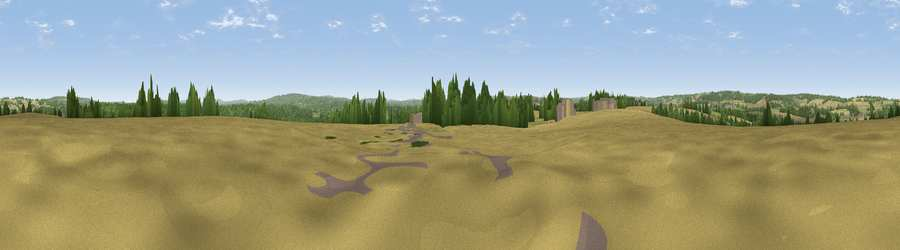

River Hill
#27081 in England · top 32% of its area beats it · near BinstedWhere it is
The exact computed spot (SU 78509 41478). Click the marker for map links.
The view, rendered

A 360° render of this exact spot computed from the terrain model, tree cover and land cover — summer colours, afternoon light, calibrated against photographs of famous viewpoints. Real trees, hedges and buildings will differ in detail.
The panorama
Grey silhouette: terrain skyline in each direction (720 bearings, Earth curvature and refraction included). Dashed green: skyline with trees (+15 m) and buildings (+8 m) as obstacles. Blue strip: how far the ground is visible on each bearing.
Where the view opens
Wedge length = distance to the farthest visible ground on that bearing (vegetation-aware). Rings at 10, 25 and 50 km.
What fills the view
43% cropland · 34% woodland · 21% grassland · 3% built-up
Angular shares of the visible panorama (visual magnitude), not map area. Landscape diversity 0.50 (0–1 Shannon).
Key numbers
More beautiful places nearby
The staircase of upgrades: each row has a higher view potential than everything closer. Driving times are estimates from straight-line distance, calibrated against real road routing — check an actual route before setting out.
| Place | Direction | Drive | Score |
|---|---|---|---|
| Viewpoint near Kingsley | SSW · 2 km | ~6 min | 48.1 |
| Viewpoint near Crondall | N · 5 km | ~11 min | 51.7 |
| Wick Hill | SSW · 7 km | ~14 min | 52.4 |
| Horsedown Common | NNW · 7 km | ~14 min | 59.0 |
| Noar Hill | SSW · 10 km | ~20 min | 62.3 |
| Gibbet Hill | ESE · 13 km | ~23 min | 64.9 |
| Temple of the Four Winds | ESE · 13 km | ~24 min | 66.6 |
| Viewpoint near Steep | SSW · 15 km | ~27 min | 68.7 |
51.16717, -0.87851 · source: dobih hill · position refined by local search. Computed location — check access rights before visiting.